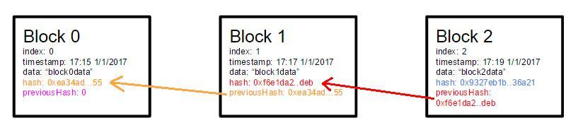
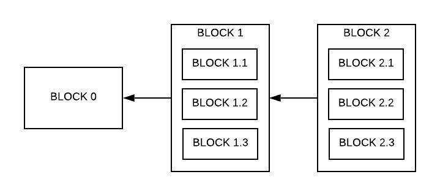
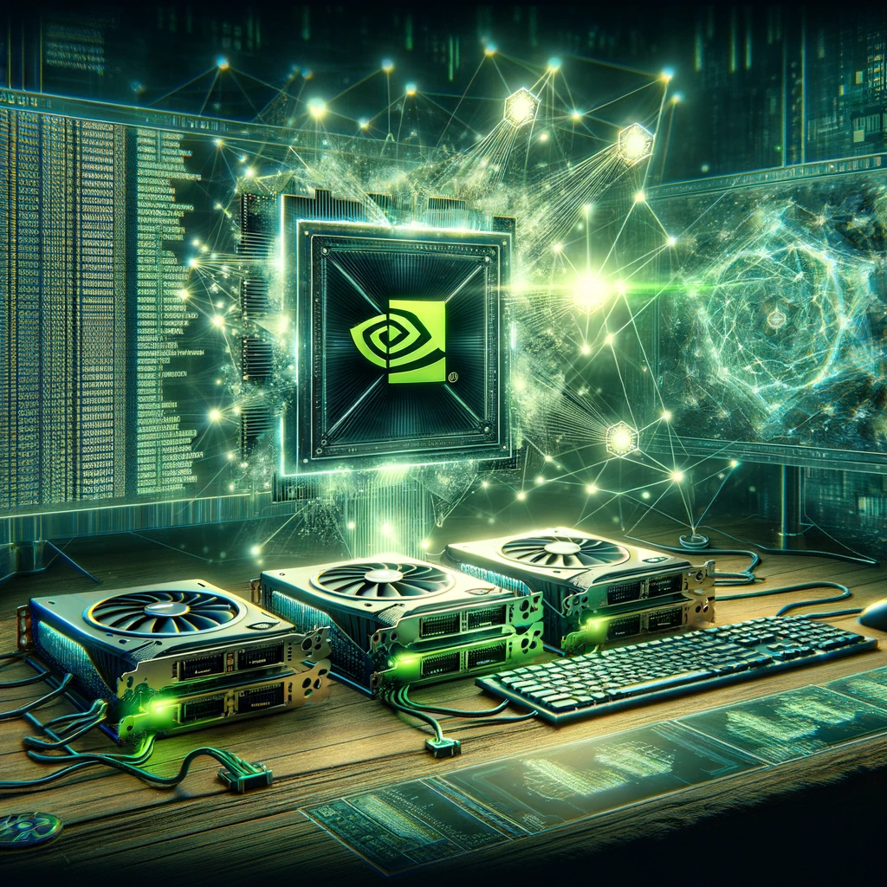
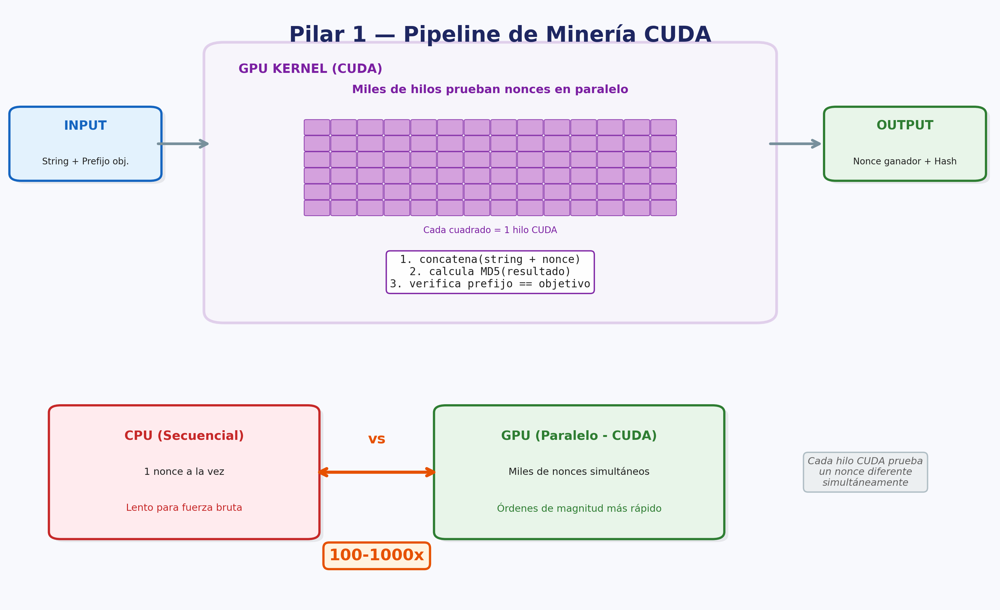
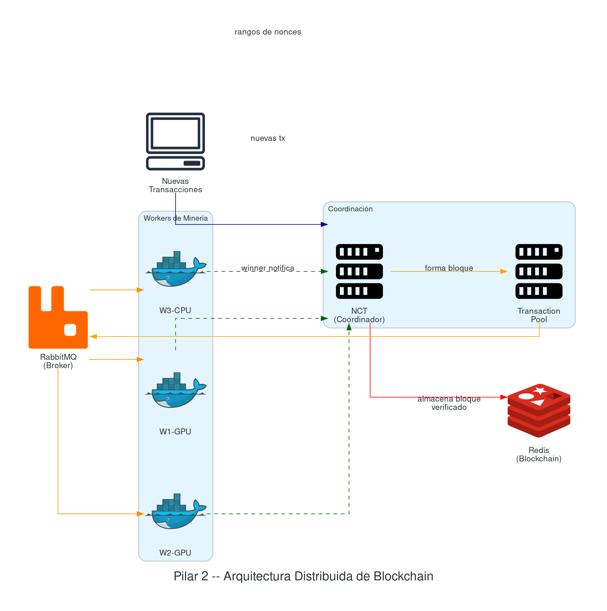
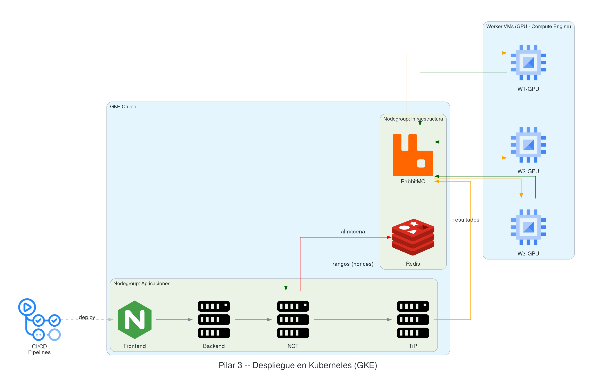

📑 Índice del documento
- Trabajo Práctico
Integrador
- Blockchain Distribuida y CUDA
- Requisitos, consideraciones y formato de entrega
- Contenidos del programa relacionados
- Objetivo
- Estructura de la BlockChain
- Pilar 1 — Programación del minero CPU y minero GPU CUDA
- Pilar 2 - Infraestructura de servicios distribuidos para una blockchain escalable
- Pilar 3 - Despliegue, prueba y escalabilidad de red BlockChain
- Referencias y Bibliografía
Trabajo Práctico Integrador
Blockchain Distribuida y CUDA
Fecha de entrega: 04/12/2026
Requisitos, consideraciones y formato de entrega
- Integrar herramientas de IA en su ciclo de vida de desarrollo (Cursor, ChatGPT/Codex, Claude, GitHub Copilot, etc.). Se espera que las utilicen como asistentes para codificar, depurar y documentar. En el informe, mencionen qué herramientas usaron y cómo les ayudaron.
- Se puede implementar con cualquier lenguaje dentro de los que se mencionaron en clase (node, python, java). El minero CUDA debe estar en C/C++ con CUDA.
- Deben incluir una grabación video que se debe subir al repositorio donde se expliquen los servicios, componentes y configuraciones que tomaron en cuenta. Esto debe mostrar que comprenden cada punto y su desarrollo.
- Pruebas Unitarias y de Integración: Incluir un conjunto mínimo de pruebas automatizadas que cubren las funcionalidades críticas del proyecto.
- Generar un informe detallado que incluya respuestas a consultas, métricas y tiempos de evaluación, gráficas, diagramas de arquitectura y conclusiones.
- Mantener un repositorio público en un servicio de
control de versiones como GitHub, Bitbucket o GitLab. Cada pilar debe
contar con una carpeta y un README.md explicativo.
- El README.md de cada Pilar debe incluir como mínimo: instrucciones para ejecutar el proyecto, diagrama de arquitectura, y decisiones de diseño tomadas.
- Compilar la aplicación para ejecución desde la terminal, con recursos preparados para ser desplegados directamente sin necesidad de abrir un IDE.
- Implementar un pipeline de CI/CD que automatice la compilación y el despliegue de la aplicación con cada nueva versión de código (GitHub Actions).
- Desplegar el servicio en un entorno público accesible desde Internet para su evaluación en producción (Despliegue en la nube).
- Proporcionar un endpoint público para cada servicio que permita verificar el estado de los principales servicios. No requiere GUI, puede devolver un JSON (Key=Servicio, value=Status). Ejemplos: https://status.lemon.me/, https://health.aws.amazon.com/health/status.
- Gestionar y mantener registros de actividades (logs) en memoria y disco.
- Seguridad:
- No commitear
.env, credenciales ni secrets al repositorio. Configurar.gitignoreapropiado desde el inicio. - Gestionar credenciales por ambiente de forma segura (GitHub Secrets, Secret Manager / Parameter Store). Zero static keys: autenticarse contra cloud providers vía Workload Identity / OIDC.
- Para registros Docker: usar image pull secrets o Workload Identity en lugar de enviar credenciales en payloads.
- Incluir gitleaks [GITLEAKS] en el pipeline de CI — si detecta un secret hardcodeado, el pipeline debe fallar.
- Si expusieron un secret accidentalmente, revóquenlo de inmediato y generen uno nuevo: queda en el historial de Git aunque después lo eliminen.
- No commitear
Contenidos del programa relacionados
- U1.6 Comunicación Cliente-Servidor y protocolos.
- U4.3–U4.4 Contenedores Docker y orquestación con Kubernetes (GKE).
- U4.5 Cloud Computing: elasticidad, nube híbrida.
- U5.1–U5.4 DevOps y CI/CD: pipelines de despliegue automatizado.
- U5.5 Observabilidad: métricas y monitoreo (Prometheus, Grafana).
- U5.6 Infraestructura como Código (IaC): OpenTofu/Terraform.
- U6.1–U6.5 Computación paralela: fundamentos, GPGPU, supercomputación.
- U7.5 Esquemas algorítmicos paralelos: Granja de Trabajadores, Bolsa de Tareas.
- U7.7 CUDA: programación masivamente paralela en GPU, algoritmos de hashing.
Objetivo
Este documento sirve como guía para implementar una “Blockchain Distribuida desde cero”, a completar durante el curso. Está diseñado para aplicar conocimientos teóricos en un proyecto práctico y funcional, organizado en entregables secuenciales que coinciden con los temas tratados en clase.
Las tareas están divididas en fases claras y cada entregable representa una etapa del desarrollo. A medida que avanzamos en el curso, se proporcionarán detalles técnicos y recursos necesarios para cada parte del proyecto, desde la configuración del entorno de desarrollo hasta la implementación de algoritmos clave para la eficiencia y seguridad de la blockchain.
Estructura de la BlockChain
Una blockchain es una base de datos distribuida donde un conjunto de nodos interactúan en modo descentralizado (P2P) para almacenar un conjunto de registros coherentes entre cada uno de los nodos.
El concepto básico de blockchain es bastante simple: una base de datos que mantiene una lista en continuo crecimiento de registros ordenados.
Algo muy similar a un log de transacciones de una base de datos.

Como se puede observar, existe un orden y una secuencialidad en las operaciones que se registran en una blockchain, haciendo que el contenido de cada bloque se pueda generar de forma distribuida.
¿Cómo es la red que queremos construir?
Queremos crear una blockchain en la que todos confíen. Si existiera más de una cadena, los usuarios perderían la confianza, porque no podrían determinar razonablemente cuál cadena es la “válida”. Para que un grupo de usuarios acepte el estado subyacente almacenado en una blockchain, se necesita una única blockchain canónica en la que un grupo de personas confíe. El whitepaper original de Nakamoto [NAK08] describe el modelo, y el libro de referencia de Antonopoulos [ANT17] lo desarrolla en profundidad.
Esto es exactamente lo que hace el algoritmo Proof of Work (PoW) [POW]: asegura que una blockchain particular permanecerá canónica en el futuro, haciendo increíblemente difícil para un atacante crear nuevos bloques que sobrescriban una parte específica de la historia (por ejemplo, borrando transacciones o creando transacciones falsas) o mantener una bifurcación. Para que su bloque sea validado primero, un atacante necesitaría resolver el nonce [NONCE] (number used only once) más rápido que cualquier otro en la red, de manera que la red crea que su cadena es la más completa. Esto sería imposible a menos que el atacante contara con más de la mitad del poder de minado de la red — un escenario conocido como ataque del 51% [51ATK].
La coherencia de la información, en una arquitectura PoW como Bitcoin, está garantizada por un proceso denominado minería [GPUMIN]. Debido a su complejidad computacional, usualmente se ejecuta sobre GPU.
Un minero (o, más precisamente, la computadora de minería) debe resolver un problema matemático complejo que requiere un poder computacional significativo (cálculo de hashes [POWNONCE]). El primer minero en resolver el problema es recompensado.
Una operación de hash es un cálculo matemático esencial para verificar transacciones y crear bloques en una blockchain. La tasa de hash [CSHR] mide la potencia computacional de la minería: cuántas operaciones de hash puede realizar una plataforma de minería por segundo. Cuantas más operaciones de hash se realicen, mayor es la probabilidad de obtener la recompensa de bloque [EERI21].
A través de esta guía aprenderá a crear una red desde cero y a programar los algoritmos de minería.
Para apoyar los desarrollos de la blockchain, usted utilizará servicios de un sistema distribuido. Esta es la respuesta a la necesidad de tener escalabilidad horizontal.
- Es inherente a la existencia de un sistema distribuido la existencia de 2 o más nodos.
- En el núcleo de un sistema distribuido se encuentra el procesamiento asincrónico.
El objetivo de este proyecto es presentar un prototipo de arquitectura que permite paralelizar y distribuir la generación de bloques (blockchain paralelizable).
La principal ventaja de esta arquitectura es que, si dos operaciones no son mutuamente excluyentes o secuenciales, pueden ser realizadas en paralelo.

Para lograr esto, se propone utilizar herramientas como RabbitMQ para el manejo de colas de los bloques a procesar, Redis como motor de base de datos para registrar los bloques y transacciones, utilizando la CPU o GPU (CUDA) para el cálculo criptográfico intensivo de hashes y resolución de desafíos. Por último, desarrollar un servidor (coordinador) para la comunicación entre todas las tareas.
Pilar 1 — Programación del minero CPU y minero GPU CUDA
En una etapa inicial, los Pixel Shaders [JAD] fueron la herramienta de programación paralela dentro del pipeline de renderizado [EBN]. Durante mucho tiempo esta fue la única funcionalidad de las placas de video — incluso el nombre “placa de video” reflejaba un uso sesgado al procesamiento del pipeline gráfico.
Esto cambió con la llegada de CUDA [CUDAPG] en 2006 [CUDAHIST].

CUDA es una tecnología game-changer: cambia la forma de pensar e interactuar con las “placas de video”. Ahora pasamos a llamarlas unidades de GPU [GPUMIN], y eventualmente — solo eventualmente — uno de sus usos es el procesamiento gráfico.
Esto no significa que el procesamiento de video no siga siendo su fuerte; significa que se abre la puerta para utilizarlas con otros fines, como la minería en el caso de las arquitecturas blockchain o la IA en el caso de modelos generativos.
CUDA es una tecnología propietaria del fabricante NVIDIA.

Hit #1 — Introducción al mundo de CUDA
Instalen lo necesario para ejecutar CUDA. Si disponen de una placa gráfica NVIDIA pueden trabajar en hardware nativo:
- CUDA Toolkit [CUDATK]
- Nsight Visual Studio Code Edition [NSIGHT]
Si no tienen una placa gráfica NVIDIA, hay varias alternativas:
- Google Colab [COLAB]: ofrece GPUs T4 gratuitas con CUDA preinstalado. Es la opción más sencilla para comenzar.
- Vast.ai [VAST]: GPUs en la nube desde ~USD 0,04/hr con CUDA 12.1+ preconfigurado.
También pueden usar Godbolt (Compiler Explorer)
[GODBOLT] para hacer pruebas sin instalar nada — la opción más
recomendada para la parte inicial de esta guía. Tengan en cuenta que la
arquitectura del hardware detrás de Godbolt puede variar; verifiquen la
arquitectura actual en la UI (menú de opciones del compilador). Las
arquitecturas CUDA actuales incluyen: sm_86 (Ampere / RTX
30xx), sm_89 (Ada Lovelace / RTX 40xx), sm_90
(Hopper / H100), sm_100 (Blackwell / RTX 50xx).
Si va a usar la versión nativa sobre hardware propio debe saber que:
- Una cosa es el driver (traductor entre el sistema operativo y el hardware).
- Otra cosa es el compilador (traductor entre el lenguaje de programación y el sistema operativo).
- Y por último, otra cosa es CUDA (traductor entre el código fuente y el lenguaje de programación), y que para que todo esto funcione, la versión de CUDA, del lenguaje de programación, del compilador, del sistema operativo y del driver deben ser compatibles.
Hit #2 — Hola mundo en CUDA
Visiten la presentación original de CUDA [CUDA11] o su versión actualizada [CUDAPG] y elaboren un programa básico de “Hola mundo” como los ejemplos que ahí se mencionan. Empiecen el informe describiendo:
- Qué entorno están utilizando.
- Si se encontraron con problemas, cómo los solucionaron.
- Cuál es su setup.
- Si usan hardware nativo, las características del mismo.
Hit #3 — Librerías CUDA
Visiten NVIDIA CCCL [CCCL] (CUDA Core Compute Libraries) y expandan el informe comentando de qué se trata este repositorio. ¿Cuándo fue la última vez que se actualizó?
Nota: el repositorio original de Thrust (
github.com/nvidia/thrust) fue archivado en marzo de 2024. Thrust ahora forma parte de CCCL [CCCL]. Visiten la documentación de Thrust [THRUST] dentro de CCCL y documenten en el informe de qué se trata y cómo se relaciona con el ecosistema CUDA actual.
Compilen y ejecuten el primer ejemplo de la sección Vectors de Thrust. ¿Hace falta instalar algo adicional o ya viene con CUDA?
Lean el Thrust Quick Start Guide [THRQSG] y comenten en el informe cuáles son las diferencias entre programar CUDA “a pelo” vs usar Thrust/CCCL.
Fin de la teoría, ahora manos a la obra.
Antes de pasar a la implementación, recuerde construir tanto código compatible con CPU (por ejemplo Python) así como también lo que menciona el enunciado (GPU CUDA).
Hit #4 — Introducción a HASH usando CUDA
El cálculo de funciones de hashing es ampliamente utilizado en criptografía. Existen múltiples algoritmos: algunos como MD5 (1991) [MD5] ya son considerados inseguros, y otros como SHA-256 (2001-2002) [SHA2] aún resisten la evolución y los tiempos actuales. Estos algoritmos suelen calcularse en GPU porque son “costosos” computacionalmente — característica deseable para PoW.
Nota: En este ejercicio utilizamos MD5 por su velocidad de cálculo, lo cual permite iterar rápidamente y observar resultados en tiempos razonables. Sin embargo, las blockchains reales como Bitcoin utilizan SHA-256 (double-SHA-256) por su resistencia a colisiones. Como ejercicio adicional opcional, compare el throughput (hashes/segundo) de MD5 vs SHA-256 en GPU y analice el impacto en el tiempo de minado.
En este punto, usted deberá escribir un programa que reciba un string por parámetro y calcule, utilizando la GPU, un MD5 y devuelva el hash calculado por consola.
Puede usar librerías disponibles para este fin. Las encontrará preguntando por CUDA MD5.
Hit #5 - HASH por fuerza bruta con CUDA
Modifique el programa anterior para que reciba dos parámetros (un hash y una cadena). Ahora debe encontrar un número tal que, al concatenarlo con la cadena y calcular el hash, el resultado comience con una cadena específica proporcionada como segundo parámetro.
Como no hay forma de adivinar cuál es ese número, deberá utilizar la GPU para probar miles o millones de combinaciones por segundo aleatoriamente hasta encontrar la correcta.
Como salida, debe mostrar el hash resultante y el número que utilizó para generarlo.
Hit #6 - Longitudes de prefijo en CUDA HASH
Realice mediciones sobre el programa anterior probando diferentes longitudes de prefijo. ¿Cuál es el prefijo más largo que logró encontrar? ¿Cuánto tardó? ¿Cuál es la relación entre la longitud del prefijo a buscar y el tiempo requerido para encontrarlo?
Hit #7 - HASH por fuerza bruta con CUDA (con límites)
Modifique el programa anterior para que reciba dos parámetros nuevos, ambos serán números, y su programa debe buscar posibles soluciones solo dentro de ese rango. Si en ese rango no hay soluciones, debe informar que no encontró nada.
Cierre etapa inicial
Elabore una batería de tests (parámetros de entrada) y ejecútelos en GPU y en CPU. Elabore una comparativa de los resultados obtenidos.
Pilar 2 - Infraestructura de servicios distribuidos para una blockchain escalable
Después de desarrollar el minero utilizando CUDA GPU, es crucial integrar los conceptos y habilidades adquiridas a lo largo de este curso a nivel de arquitectura distribuida. En esta arquitectura simplificada, vamos a desarrollar solo algunos de los componentes que una blockchain real contiene. A continuación se detallan los puntos esenciales a desarrollar.
Objetivo de la construcción de la blockchain: Manejar transferencias entre usuarios (usuario A; usuario B; monto) de forma segura y asegurando que el contenido de la blockchain no puede ser alterado.

P1 - Validación de Transacciones y Bloques
Minero en CUDA (realizado en Pilar 1) para resolver tareas de PoW (Proof of Work) a través de algoritmos de hash. Este algoritmo debe recibir parámetros para incrementar la complejidad de las tareas (manejado por el nodo coordinador, descrito más adelante).
Plataforma escalable (Cloud / Kubernetes) con al menos 2 réplicas por servicio.
P2 — Distribución (async) de tareas de minería
Integración de un sistema de colas (RabbitMQ) configurado en una arquitectura híbrida de colas y tópicos a la cual se suscriben un conjunto de nodos workers para recibir tareas a ser resueltas. Como es de esperarse, N nodos deben competir o colaborar — en un pool de minería [POOL] los mineros comparten poder de cómputo y dividen las recompensas proporcionalmente — para resolver la tarea de hash y notificar cuando encuentren un resultado, determinando así el worker ganador y resolviendo el hash.
P3 - Estado blockchain, transacciones y bloques
Integración de un motor de DB con persistencia (Redis + Persistencia) el cual permite registrar el trackeo de las operaciones en la base de datos. Esta será la encargada de construir la “blockchain”.
P4 - Nodo coordinador de tareas (NCT)
Nodo coordinador que será responsable de:
- Definir cómo se estructuran las transacciones en el sistema, cómo se validan y cómo se agregan a la cadena de bloques.
- Formar los bloques de tareas que deben ser resueltos por los nodos workers.
- Responsable del algoritmo de consenso que permita a todos los nodos en la red acordar la validez de los bloques y las transacciones.
El NCT, para el manejo de tareas, utiliza RabbitMQ como un sistema de mensajería asincrónica para gestionar las tareas de minería distribuidas entre los nodos trabajadores. Actúa como mediador para la distribución y manejo de tareas de PoW que necesitan ser resueltas para crear nuevos bloques.
Proceso
NCT.1 - Publicación de Tareas: El nodo coordinador (P4) publica tareas de minería en RabbitMQ. Estas tareas incluyen los datos necesarios para que los nodos trabajadores intenten resolver el problema de PoW. La información típicamente incluiría:
- El hash del último bloque confirmado.
- La lista de transacciones pendientes para incluir en el próximo bloque.
- El nivel de dificultad actual del PoW.
NCT.2 - Competencia o cooperación: Los nodos trabajadores están suscritos a ciertas colas en RabbitMQ y reciben tareas de minería. Cada nodo intenta resolver el problema de PoW y el primero en lograrlo publica su solución al coordinador del sistema.
NCT.3 - Verificación de resultados: Una vez que un nodo de minado encuentra una solución válida y la envía al coordinador, este verifica la información, y si es correcta, procede con las siguientes etapas de confirmación del bloque.
NCT.4 - Almacenamiento de Bloques: Redis se usa para almacenar información de bloques de manera eficiente y rápida. Cada bloque se almacena como un hash en Redis, facilitando el acceso rápido y la persistencia de datos.
Estructura ejemplo de un Bloque en Redis:
| Campo | Descripción |
|---|---|
previous_hash |
Hash del bloque anterior, necesario para mantener la integridad de la cadena. |
nonce |
El valor que resuelve el problema de PoW. |
timestamp |
Fecha y hora de creación del bloque. |
transactions |
Lista de transacciones incluidas en el bloque. |
block_hash |
Hash del bloque actual, calculado a partir de los datos del bloque. |
P5 — Pool de Transacciones
Construir un pool de transacciones (TrP) pendientes [MSRBTC] donde el TrP fragmenta una tarea completa en desafíos más pequeños. Entonces:
- Subdivide tareas de minería generadas por el nodo coordinador en partes más pequeñas (rangos de búsqueda del nonce).
- Recibir keep-alive de los mineros GPU para conocer la capacidad
disponible de procesamiento. En caso de no disponer de mineros GPU:
- Reducir la complejidad de la tarea de minado (Prefijo).
- Iniciar/destruir instancias de mineros CPU en la nube cuando sea necesario. Opciones de implementación: HPA (Horizontal Pod Autoscaler) de Kubernetes para escalar pods automáticamente, VMs on-demand via OpenTofu, o Cloud Run jobs para ejecuciones efímeras.
Pilar 3 - Despliegue, prueba y escalabilidad de red BlockChain
Tras el desarrollo de los componentes y servicios necesarios, y la integración de las herramientas pertinentes, es fundamental avanzar hacia la implementación en un entorno productivo. Para esto, utilizaremos la plataforma de Google Cloud, que ofrece una cuenta de prueba con 300 USD. Este crédito nos permite explorar y emplear múltiples recursos que, a pesar de ciertas limitaciones, son adecuados para desplegar y escalar efectivamente nuestra plataforma.

3.1 - Kubernetes como nuestra plataforma base
Para el despliegue de nuestra plataforma, emplearemos Kubernetes, configurado a través de OpenTofu (OT), una herramienta de infraestructura como código. Mediante OT, configuraremos un clúster de Kubernetes en Google Kubernetes Engine (GKE), que será responsable de administrar todos los recursos que despleguemos. Este clúster hospedará tanto los servicios de infraestructura esenciales como RabbitMQ y Redis, como los componentes de las aplicaciones que ejecutaremos. La configuración mínima del clúster deberá incluir:
- Un nodegroup específico para los servicios de infraestructura.
- Un nodegroup compartido para las aplicaciones del sistema.
- Máquinas virtuales externas al clúster dedicadas a tareas de procesamiento intensivo.
3.2 - Despliegue de recursos automatizado
La automatización del despliegue es crucial y se gestionará a través de múltiples pipelines de CI/CD que facilitarán:
- Pipeline 1: Construcción y configuración del entorno Kubernetes.
- Pipeline 2: Despliegue de servicios fundamentales como Redis y RabbitMQ.
- Pipeline 3: Implementación de cada una de las aplicaciones desarrolladas (frontend, backend, split, join).
- Pipeline 4: Despliegue de máquinas virtuales que actuarán como nodos de trabajo adicionales, los cuales se ajustarán dinámicamente según la demanda de la red.
3.3 - Pruebas y análisis de resultados
La evaluación del rendimiento es esencial. Implementaremos una serie de pruebas para analizar cómo se comporta la plataforma bajo diversas cargas y configuraciones. Esto incluirá:
- Realizar pruebas de carga con bulks de transacciones de diferentes tamaños, desde 1 hasta 100,000 transacciones, para observar cómo escala nuestra solución.
- Probar diferentes dificultades de prefijo de hash, desde 1 hasta 8 caracteres, para evaluar la robustez del sistema ante variaciones en los requisitos de procesamiento.
- Experimentar con varios tamaños de fragmentación del pool de transacciones, desde 1% hasta 50%, para determinar la eficiencia de la distribución de tareas.
- Simular el ingreso y egreso de nodos con GPU para verificar la capacidad de la red de adaptarse a cambios en el hardware disponible, garantizando la generación dinámica de nodos CPU cuando sea necesario.
Nota: Para cada una de estas configuraciones, se medirán y analizarán los tiempos de respuesta. Con los resultados obtenidos, genere:
- Conjunto de gráficos comparativos.
- Un análisis detallado para concluir sobre el desempeño y la escalabilidad de la red Blockchain implementada.
Esto proporcionará información valiosa sobre la capacidad de adaptación y escalabilidad de la plataforma bajo diferentes escenarios operativos.
Arquitectura modelo
El diagrama interactivo de la arquitectura de referencia se comparte por separado durante la cursada (link de Miro disponible en el aula virtual).
Referencias y Bibliografía
Blockchain y Criptografía
- [51ATK] Ataque del 51% — Binance Academy. https://academy.binance.com/en/glossary/51-percent-attack
- [ANT17] Antonopoulos, A. M. (2017). Mastering Bitcoin (2nd ed.). O’Reilly Media.
- [CSHR] CoinShares Mining Report — Hash Rate and Miners Cost Structures. https://blog.coinshares.com/coinshares-mining-report-the-halving-and-its-impact-on-hash-rate-and-miners-cost-structures-8646835d88ac
- [EERI21] Mining Reward Economics — EERI Research Paper 2021-02. https://www.econstor.eu/bitstream/10419/251106/1/EERI-RP-2021-02.pdf
- [GPUMIN] GPU Cryptocurrency Mining — Investopedia. https://www.investopedia.com/tech/gpu-cryptocurrency-mining/
- [MSRBTC] Bitcoin Transaction Processing — Microsoft Research. https://www.microsoft.com/en-us/research/wp-content/uploads/2016/02/bitcoin.pdf
- [NAK08] Nakamoto, S. (2008). “Bitcoin: A Peer-to-Peer Electronic Cash System”. https://bitcoin.org/bitcoin.pdf
- [NONCE] Nonce — Investopedia. https://www.investopedia.com/terms/n/nonce.asp
- [POOL] Mining Pools — Phemex Academy. https://phemex.com/academy/what-are-mining-pools
- [POW] Proof of Work (PoW) — Bit2Me Academy. https://academy.bit2me.com/que-es-proof-of-work-pow/
- [POWNONCE] Proof of Work and the Nonce. https://dwan.org/index.php/2017/06/13/proof-of-work-and-the-nonce/
CUDA y Computación en GPU
- [CCCL] NVIDIA CCCL — CUDA Core Compute Libraries. https://github.com/NVIDIA/cccl
- [COLAB] Google Colaboratory. https://colab.research.google.com
- [CUDA11] NVIDIA (2011). CUDA C/C++ Basics — SC11 Tutorial. https://www.nvidia.com/docs/io/116711/sc11-cuda-c-basics.pdf
- [CUDAHIST] History of CUDA Cores — History of Computers. https://historyofcomputers.eu/hardware/how-cuda-cores-transformed-nvidias-gpu-technology/
- [CUDAPG] NVIDIA. CUDA C++ Programming Guide. https://docs.nvidia.com/cuda/pdf/CUDA_C_Programming_Guide.pdf
- [CUDATK] CUDA Toolkit Downloads. https://developer.nvidia.com/cuda-downloads
- [GODBOLT] Godbolt — Compiler Explorer. https://godbolt.org/
- [NSIGHT] NVIDIA Nsight Visual Studio Code Edition. https://marketplace.visualstudio.com/items?itemName=NVIDIA.nsight-vscode-edition
- [THRQSG] NVIDIA. Thrust Quick Start Guide. https://docs.nvidia.com/cuda/pdf/Thrust_Quick_Start_Guide.pdf
- [THRUST] NVIDIA Thrust Documentation. https://docs.nvidia.com/cuda/thrust/index.html
- [VAST] Vast.ai — GPU Cloud. https://vast.ai
Algoritmos de Hashing
- [MD5] Wikipedia — MD5. https://es.wikipedia.org/wiki/MD5
- [SHA2] Wikipedia — SHA-2. https://es.wikipedia.org/wiki/SHA-2
Evolución de GPUs y Shaders
- [EBN] Ebner, M. “Evolution of Shaders”. University of Greifswald. https://stubber.math-inf.uni-greifswald.de/~ebner/resources/uniWu/evoShader.pdf
- [JAD] Jadhav, V. “The History & Evolution of Graphics Cards (GPUs)”. https://medium.com/@veersenjadhav/the-history-of-evolution-of-graphics-cards-gpus-89f1d5354d78
Herramientas
- [GITLEAKS] gitleaks — Protect and discover secrets using Gitleaks. https://github.com/gitleaks/gitleaks